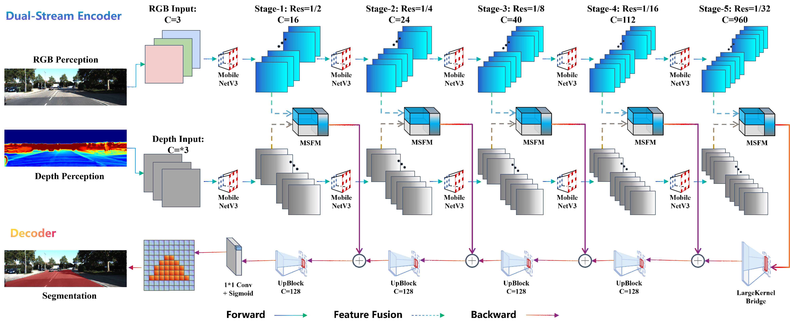
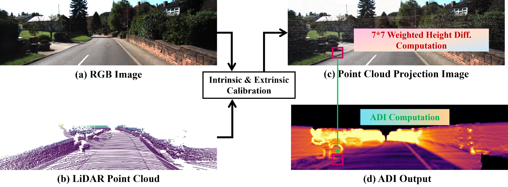
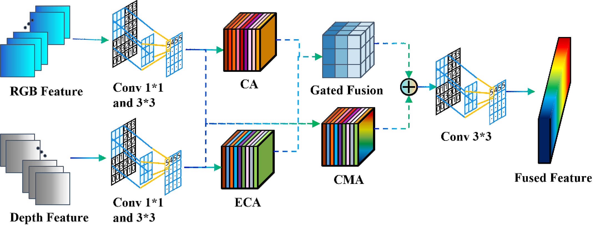
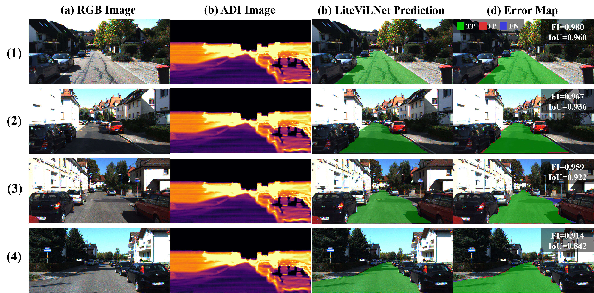
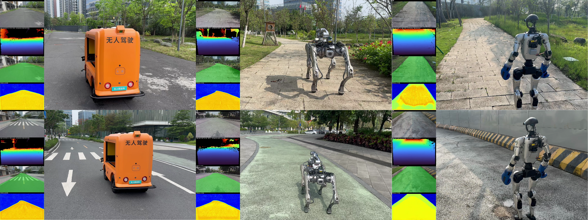
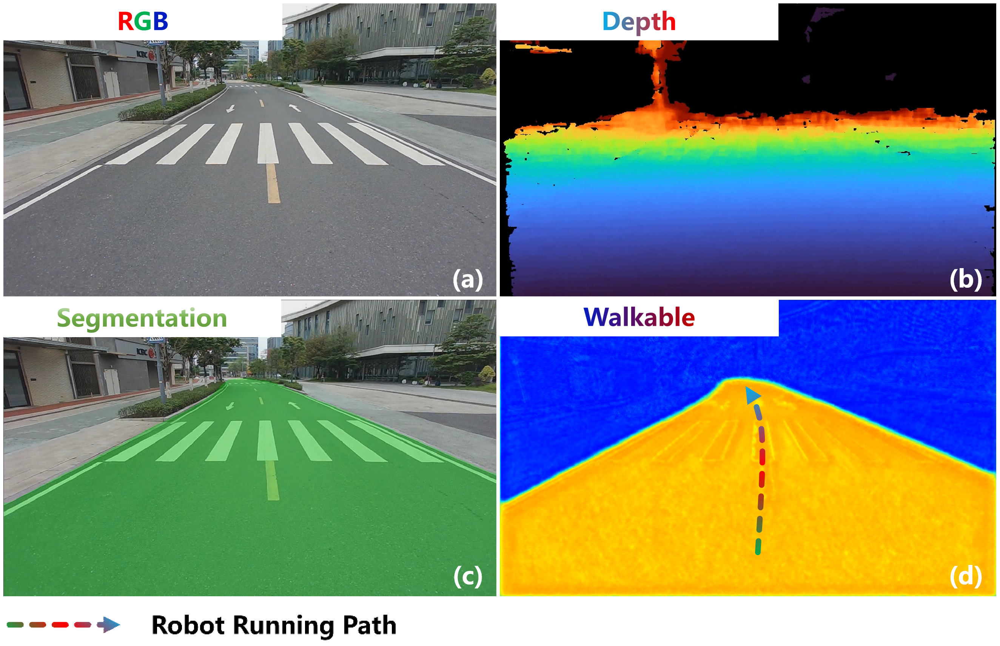

Road segmentation is a fundamental perception task for autonomous driving and intelligent robotic systems, requiring both high accuracy and real-time inference, especially for deployment on resource-constrained edge devices. Existing multi-modal road segmentation methods often rely on heavy transformer-based encoders to achieve state-of-the-art performance, but their enormous computational cost prohibits real-time deployment on embedded platforms.
To address this dilemma, we propose LiteViLNet, a lightweight multi-modal network that fuses RGB texture information and LiDAR geometric information for efficient road segmentation. Specifically, we design a dual-stream lightweight encoder with depth-wise separable convolutions to extract hierarchical features from both modalities with minimal parameters. We further propose a Multi-Scale Feature Fusion Module (MSFM) to facilitate cross-modal interaction at different levels, and a large-kernel-bridge module to capture long-range dependencies with linear complexity. Extensive experiments on the KITTI Road dataset and real-world applications demonstrate that LiteViLNet achieves a promising balance between accuracy and efficiency. Notably, with only 14.04M parameters, our model attains a 96.36% MaxF score, ranking the best among all CNN-based methods and being comparable to larger transformer-based models, and runs at 163.79 FPS on RTX 4060 Ti (22.18 FPS on Jetson Orin NX).
LiteViLNet's road segmentation performance on KITTI Road benchmark and real-world robotic deployments across multiple platforms.
A lightweight yet powerful vision-LiDAR fusion network designed for real-time road segmentation on edge devices.
Only 14.04M parameters with a dual-stream MobileNetV3 backbone and depth-wise separable convolutions — an order of magnitude smaller than transformer-based alternatives.
Achieves 163.79 FPS on RTX 4060 Ti (FP16) and 22.18 FPS on Jetson Orin NX (FP16), enabling real-time road segmentation for embedded deployment.
Novel Multi-Scale Feature Fusion Module enables bidirectional cross-modal attention and adaptive gated fusion between RGB and LiDAR features at multiple scales.
Successfully deployed on KuaFu Delivery Vehicle, Unitree-B2 quadruped, and Unitree-G1 humanoid — demonstrating cross-platform versatility for autonomous navigation.
A dual-stream encoder with multi-scale fusion and large-kernel bridge for efficient RGB-LiDAR road segmentation.

Fig. 1. Overall Architecture of LiteViLNet. The network consists of a dual-stream lightweight encoder (MobileNetV3 for RGB and depth), Multi-Scale Feature Fusion Modules (MSFM) at each stage, a large-kernel-bridge module, and a decoder with deep supervision producing the segmentation mask.

Fig. 2. ADI Generation Pipeline. Raw 3D LiDAR point cloud is projected onto the image plane via intrinsic/extrinsic calibration, then converted into a 2D Altitude Difference Image (ADI) using a 7×7 weighted height difference computation, encoding local height differences between ground plane and obstacles.

Fig. 3. Architecture of the Multi-Scale Feature Fusion Module (MSFM). It sequentially performs channel compression, intra-modal enhancement (ECA), coordinate attention, bidirectional cross-modal attention, and adaptive gated fusion to integrate complementary RGB texture and LiDAR geometric information at each feature scale.
LiteViLNet achieves the best MaxF among all CNN-based methods on KITTI Road, comparable to heavy transformer models, while running significantly faster.
| Method | Type | Params | MaxF (%) ↑ | AP (%) ↑ | FPS ↑ |
|---|---|---|---|---|---|
| LiteViLNet (Ours) | CNN | 14.04M | 96.36 | 93.72 | 163.79 |
| VLLiNet | CNN | — | 96.22 | 93.41 | — |
| CMX-L | CNN | — | 96.10 | 93.20 | — |
| NLSS | CNN | — | 95.84 | 92.68 | — |
| BEV-Seg (Trans.) | Transformer | >100M | 96.50 | — | ~10 |
| Platform | Precision | Latency (ms) | FPS | GPU Power |
|---|---|---|---|---|
| RTX 4060 Ti | FP16 | 6.11 | 163.79 | ~160W |
| Jetson Orin NX | FP16 | 45.09 | 22.18 | ~25W |

Fig. 4. Qualitative Segmentation Results on KITTI Road Validation Set. Each row shows: (a) input RGB image, (b) corresponding ADI from LiDAR depth, (c) LiteViLNet segmentation prediction, and (d) error map with F1-score and IoU. Errors are mainly concentrated on road boundaries.
LiteViLNet is deployed on diverse robotic platforms — from delivery vehicles to quadruped and humanoid robots — for autonomous road perception and navigation.

Fig. 5. Real-world Deployment on Different Robots. Left: KuaFu Delivery Vehicle, Middle: Unitree-B2, Right: Unitree-G1. For each platform, the left column shows the perception pipeline (RGB, depth, segmentation mask, walkable confidence heatmap) and the right column shows the robot navigating autonomously.

Fig. 6. First-person Perception Pipeline on the KuaFu Delivery Vehicle. (a) Raw RGB from Orbbec Gemini 336L, (b) depth map, (c) drivable area segmentation mask, and (d) walkable confidence heatmap with planned trajectory. LiteViLNet provides stable and accurate road perception for lane-centering navigation.
If you find LiteViLNet useful for your research, please cite our paper.
@article{peng2026litevilnet,
title={LiteViLNet: Lightweight Vision-LiDAR Fusion Network for Efficient Road Segmentation},
author={Peng, Daojie and Wang, Bingtao and Ma, Fulong and Zhang, Liang and Ma, Jun},
journal={arXiv preprint arXiv:2605.21007},
year={2026}
}